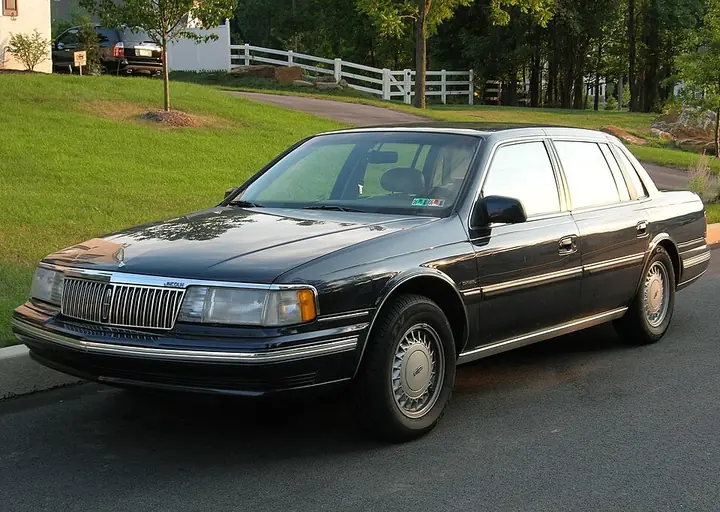
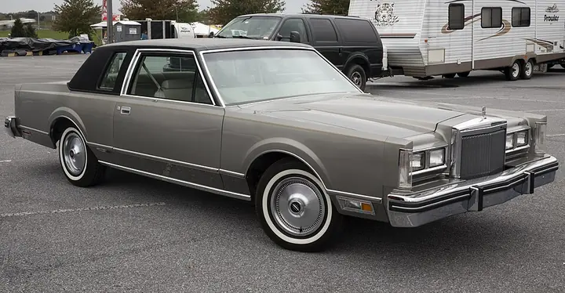
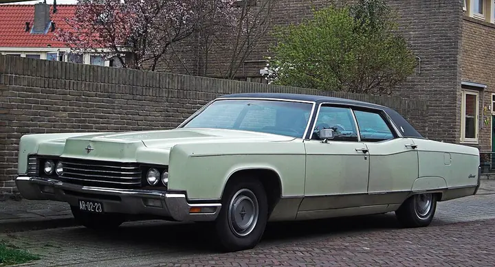
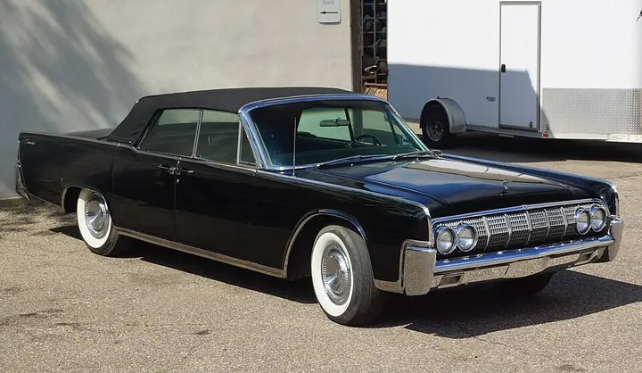
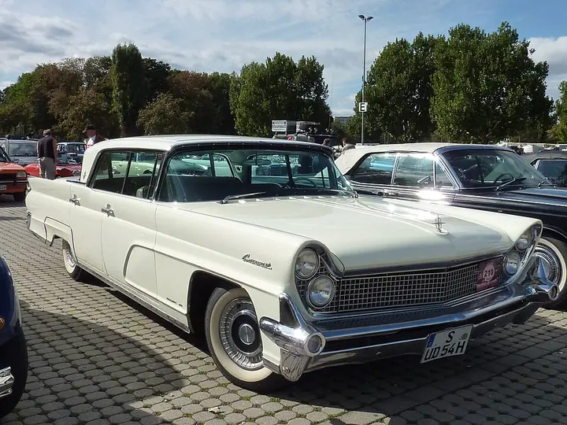
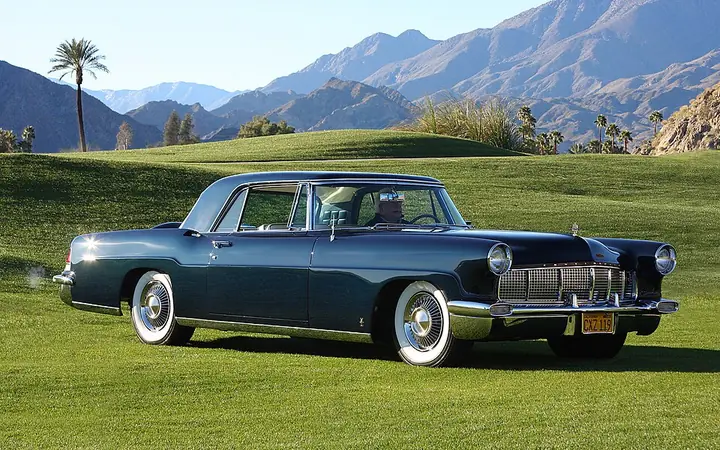
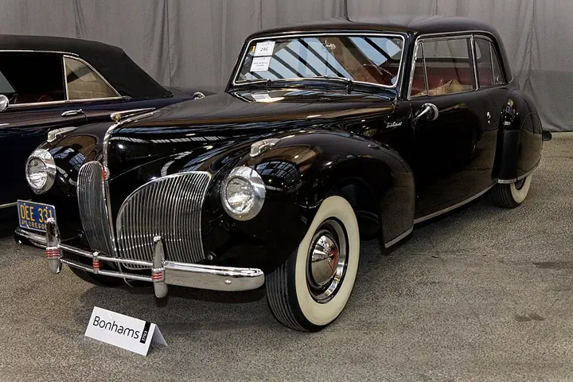

Lincoln Continental
Tenth generation (2017–2020) · 2016–2020
Abstract
This generation of the Lincoln Continental is a full-size luxury car, built 2016 – October 2020 in United States: Flat Rock, Michigan (Flat Rock Assembly Plant). Body styles: 4-door sedan. Layout: Transverse, FF layout / F4 layout. Designed by Max Wolff (2013), David Woodhouse (2014).

1Specifications
| Production | 2016 – October 2020 |
|---|---|
| Model years | 2017–2020 |
| Assembly | United States: Flat Rock, Michigan (Flat Rock Assembly Plant) |
| Designer | Max Wolff (2013), David Woodhouse (2014) |
| Class | Full-size luxury car |
| Body style | 4-door sedan |
| Layout | Transverse, FF layout / F4 layout |
| Platform | Ford CD4 platform |
| Engine | 3.7 L Cyclone V62.7 L EcoBoost V6 twin-turbo3.0 L EcoBoost V6 twin-turbo |
| Transmission | 6F55 6-speed automatic |
| Wheelbase | 117.9 in123.9 in (Coach Door Edition) |
| Length | 201.4 in207.4 in (Coach Door Edition) |
| Width | 75.3 in |
| Height | 58.5 in |
| Weight | 4224–4547 lb |
| Related | Lincoln MKZFord FusionFord MondeoFord Taurus (China) |
| Predecessor | Lincoln MKS |
2Versions
- Coach Door Editions
3Previous generations






.jpg){kind=link}

_(cropped).jpg){kind=link}

_(cropped).jpg){kind=link}






4Generation by generation
Length −4% from the first to the last
1940–1942 19405,329 mm
1956–1957 19565,547 mm
1958–1960 19585,817 mm
1961–1969 19605,395 mm
1970–1979 19705,715 mm
1980 19805,568 mm
1982–1987 19825,098 mm
1988–1994 19875,210 mm
1995–2002 19945,240 mm
2017–2020 20165,116 mm
Weight +6% from the first to the last
1940–1942 19401,814 kg
1956–1957 19562,268 kg
1958–1960 19582,268 kg
1961–1969 19602,268 kg
1970–1979 19702,223 kg
1980 19801,842 kg
1982–1987 19821,535 kg
1995–2002 19941,754 kg
2017–2020 20161,916 kg